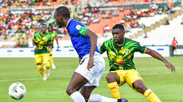

Last weekend witnessed a flurry of sports activities across Namibia. From local tournaments to international competitions, athletes from various disciplines showcased their talents and sportsmanship.

Last weekend witnessed a flurry of sports activities across Namibia. From local tournaments to international competitions, athletes from various disciplines showcased their talents and sportsmanship.
One of the highlights of the weekend was the thrilling rugby match between local teams, which drew a large crowd of enthusiastic fans. Additionally, the annual marathon brought together runners from different regions, promoting fitness and community spirit.
The success of these events was not only due to the efforts of athletes but also the support of volunteers, sponsors, and local communities. Their dedication and passion for sports played a vital role in making the weekend a memorable one.
